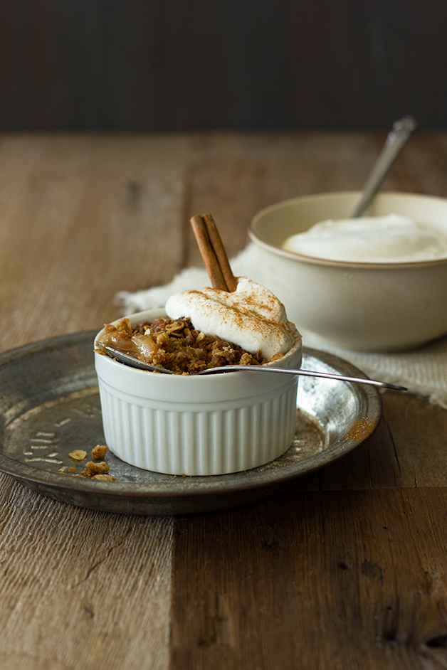

Vegan Apple Pie Crumbles

Cook time: 35 minutes
Servings: 4 crumbles
All the flavor of the best apple pie, PLUS an irresistibly crunchy and sweet crumble topping, with only minutes of prep time!{Whole wheat and vegan}
Ingredients
- Apple Pie Filling
- 1 lb (4 C) peeled and chopped apples
- ¼ C packed brown sugar
- 2 TB whole wheat pastry flour
- ½ tsp cinnamon
- pinch of salt
- Crumble Topping
- ½ C whole wheat pastry flour
- ½ C old-fashioned oats
- ⅓ C packed brown sugar
- 5 TB graham cracker crumbs
- 1 tsp cinnamon
- ⅛ tsp salt
- ¼ C coconut oil, melted
- Toppings
- freshly whipped cream
- cinnamon sugar
Instructions
- Preheat oven to 350 °F. Lightly grease four 6-oz. ramekins with nonstick spray.
Apple Pie Filling:
- In a large bowl, toss apples with brown sugar, flour, cinnamon, and salt to coat. Divide evenly between the prepared ramekins.
Crumble Topping:
- Whisk together flour, oats, brown sugar, graham cracker crumbs, cinnamon, and salt. Add melted coconut oil and mix in until entire mixture is crumbly. Spoon over ramekins, piling high (it will look like a lot, but use it all).
- Place ramekins on a baking sheet and bake for 35-40 minutes, covering with foil after 30 minutes, until tops are golden-brown and you can hear apples sizzling
- Cool briefly before serving. Serve with freshly whipped cream and cinnamon sugar, if desired. Crumbles can also be covered with plastic wrap and refrigerated to serve later. Optionally, reheat in mivrowave before serving.
Notes
- I suggest using a sweet, crispy apple for this recipe. (I used Pink Lady).
- Skip the whipped cream or use a vegan substitute to keep this recipe vegan.
Next Recipe
Back to Top